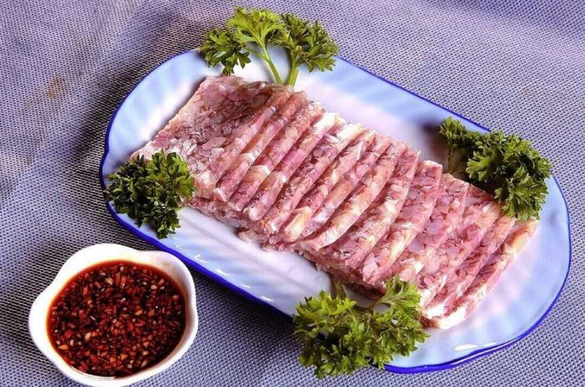
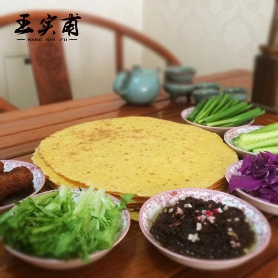

2020年第四届“华夏文化，有冀可寻”河北地域特色文化线上展览|美食文化篇（一）
冀菜，中国第九大菜系。是于2006年10月由国家商务部、中国烹饪协会、中国饭店协会在陕西西安市举办的第二届中国餐饮业博览会新菜系大赛中，大会组委会评定授予的唯一中国新菜系，“冀菜”从而叫响全中国的平台。
多年来，中国八大菜系中，富于深厚文化底蕴的冀菜缺乏一席之地。2006年3月， 直隶官府菜刚一面市，便以其“菜品酱香浓郁、器皿华贵大气”的特色，博得了各界的好评。2006年6月，
直隶官府菜被评为我国非物质文化遗产。10月， 直隶官府菜作为冀菜的代表，参加了在西安举行的中国第二届餐饮博览会，并以精美的菜品、华贵大气的青花瓷器皿、以古莲池、直隶总督署为造型的盘托、精彩的 菜模表演，再次震惊了餐博会，一举囊括了16项大奖，让以直隶官府菜为代表的冀菜，在餐博会上光芒四射，并荣获2008奥运会推荐菜品金奖。
冀菜的三大流派

宫廷塞外菜之——扒熊掌 冀东沿海菜之——水晶鸡片
冀中南平原菜之——金毛狮子鱼
冀菜有三大主要流派，以承德等地为代表的宫廷塞外菜；以唐山等地为代表的冀东沿海菜；以及省会石家庄为代表的冀中南平原菜。直隶官府菜流派（冀中南菜）的炸烹虾段、荷包里脊、炒代蟹、锅包肘子，宫廷塞外菜流派的金银燕菜、扒熊掌、烤全鹿，冀东流派的芙蓉燕菜、水晶鸡片、酱汁瓦块鱼等菜品，都极具河北独特的风味。
（选自悠悠华夏，冀香满园）
一、保定美食文化
尤老有一玩笑话：保定菜一句话以概之，甜面酱味。北京面酱太甜，石家庄太咸，保定面酱不甜不咸，恰好。
保定历为京畿要地，南北要冲，城临四野，地址平坦，四达之衢，人民凑集。物产丰富，保定地处广阔富饶的冀中平原，西有太行山脉，东有白洋淀水乡，人口众多，物产丰富。品种繁多的农牧鱼林等土特产品，为保定菜肴的创立发展，提供了优厚的物质条件。特别是一亩泉的甘甜清水，“华北明珠”白洋淀的淡水鱼、鸭肝，唐县平菇，定州猪，易县杂交牛，阜平奶山羊，安国、定州、清苑、徐水的鸡，徐水大白菜，安国紫皮大蒜，定州大葱，望都辣椒，保定郊区春不老、大白萝卜、青萝卜，小汲店的西瓜，曲阳鸭梨，满城大柿子、雪桃，涞水核桃、杏仁，保定槐茂酱菜、面酱等名产决定了保定菜肴的独有特色。
（一）美食发展历程
宋金年代的初步繁荣。在今保定地区先后建定州路（后改中山府）、高阳关路以及保州等军、州，成为边关重地。真宗景德元年（1004年）“澶渊之盟”后，经历了110多年的安定局面，北宋促进了保定经济进一步发展，从而带动了饮食业的初步繁荣，苏轼任定州知州时，还独创了东坡肉。元好问《顺天府营建记》载：“为酒馆二，曰浮香、金台。”金末张柔重建保州城时，把菜肴酒馆列为城市建设的重要组成部分。保定菜肴呈中性菜、适应性强等特点亦初步展现出来。
明清年代的发展昌盛。明清时期特别是清代，保定长期成为河北省（直隶省）的政治、军事、文化中心，商业发达，市场繁荣，饮食业高度发展，名店餐馆遍布城内四关，尤以十园、十庄、十馆、五楼、五春、五轩著称。开业于清咸丰元年（1851年）的清代最大的膳业经营与厨师培训职能合一的保定张家作坊，规模相当可观。该作坊闻名省内外，既承办升迁任职、祝寿庆功、婚丧嫁娶、宴请宾朋的大型宴会，包办酒席等业务，又长期负责向北京皇宫选送御厨，为直隶省各府州县衙官员任职和各省赴京公干官员提供厨师，为各地饭庄餐馆培训技术人员。
（选自64组保定美食）
（二）美食特点
保定小吃的特点总的来说就是选料广泛，口味多样，以咸鲜、清香为主。烹饪方法也各具特色。尤其肉质可以做到肥而不腻，回味醇厚，鲜香、油香、形香，吃起来回味无穷。
一是用料广泛，选料认真，一丝不苟，务求精良。
二是刀工精细、刀法繁多，配菜注重外型，色泽鲜艳，主次分明：保定菜肴的制作十分讲究刀工，刀法细腻，技艺精湛。如被人称为“张飞刀”的保定名师张金山，从事烹饪工作60多年，刀工技术达到了炉火纯青的程度。他取一只活鸡从宰杀煺毛、开膛、取料，到炒成一盘辣子鸡丁，仅用5分钟时间，速度惊人，堪称一绝。
三是烹调方法全面，基本功扎实，在借鉴全国各菜系经验的基础上，注重创新：保定烹饪历史悠久，早在清代就出现昌盛时期。除了清宫代表菜“满汉全席”外，盛行名菜还有山珍、鸡鸭、鱼虾、肉菜、素菜、民族菜等八个类别达600多种。
（选自仙女小分队、保定美食）
（三）美食示例
1. 驴肉火烧
保定驴肉火烧是河北保定的著名地方小吃，和保定三宝（王铁匠铁球，保定面酱，保定春不老）并驾齐驱。即把熟驴肉夹到火烧里食用，火烧口感酥脆，驴肉肥而不腻，回味醇厚。
保定驴肉火烧是中国北方民间小吃一种，发源于河北省古城保定，明朝时期，朱棣造反，当时皇帝朱允炆命李景隆平叛。李不敌，一路退守德州，路过漕河镇，粮草匮乏，李命令骑兵杀马食肉。马肉味道不错，便在此地留下了养马食肉的传统。到清中期，马为重要军事单位，不准平民养殖屠杀。当地人便改吃驴，不久发现驴肉不仅比马肉便宜还好吃。再加上当地闻名的火烧，美名远扬。 广泛流传于冀中平原，其中以保定北部徐水县的漕河地区历史最为悠久。驴肉先以大火后以温火炖，配以近20种调料，烹煮时间长，熟度透彻，色泽鲜嫩，肉香而不柴，香味绵长，酥软适口。医书载驴肉补血、补气、补虚。驴肉低脂肪、高蛋白，含有钙磷铁等元素，还有补血、补气、补虚的作用。
驴肉火烧这一名吃成为了名副其实地除了“铁球、面酱、春不老”之外的保定第四宝，已经融入了保定普通人民的生活中，成为保定悠久的饮食文化的一个重要的组成部分。
（选自“冀”往开来 走进保定、舌尖上的保定、创造119、仙女小分队、美食美客、保定美食）
2. 定州焖子

定州焖子是河北省定州市最有名的传统小吃之一，由精选的瘦猪肉和红薯粉灌制而成 ，不肥不腻，香味浓郁。北方常说的焖子是驴肉火烧保定派的食物，皮冻状，佐食驴肉增加口感。但定州焖子并非此类，它是一种肉类熟食。焖子是中国北方地区的传统特色小吃，定州人“上到九十九，下到刚会走，都吃过焖子”。如果你是头一次见到焖子，看到那比常见的圆火腿还粗，尝尝你就会立马明白了，原来它其实是一种肉食肠。可以说焖子是定州市最具有代表性的食物，也是招待客人饭桌上必不可少的一道菜。到定州的人不吃焖子就不算到过定州。
定州焖子吃法：
凉拌：切片拌上葱花，酱油（或醋）少许，香油少许。
清蒸：放上葱花，清蒸10分钟，这样比较好吃。
爆炒：可以跟大葱一起爆炒。
不放水炖：可以和白菜、粉条、土豆、黄豆牙....一起炖着吃，定州独有特色。v
（选自“冀”往开来 走进保定、仙女小分队、保定美食）
3.白运章包子
白运章包子是以肥瘦相间的新鲜牛肉、时令蔬菜为馅料，包子皮是用发面和烫面按一定比例制成。包子的特点是皮薄有筋道，肉馅鲜香，回味无穷。1958年在全国饮食评比时，“保定白运章包子”与“天津狗不理包子”并列第一。1980年又被评为河北省优质风味食品名牌产品。
面粉富含蛋白质、脂肪、碳水化合物和膳食纤维。中医认为，面粉性味甘凉，有养心益肾、健脾厚肠、除热止渴的功效。包子、饺子、馄饨都是以面粉为皮辅以各种馅料制咸的特色食品。包子外皮松软有弹性，口味鲜美；饺子几乎含有人体所需的各种营养；馄饨皮薄爽滑。三者因馅料、烹饪方法不同，营养成分差异很大，但总的来说，三种食物的总体营养成分搭配合理，都属于“完美的金字塔食品”。面粉富含蛋白质、碳水化合物、维生素和钙、铁、磷、钾、镁等矿物质，有养心益肾、健脾厚肠、除热止渴的功效。
（选自“冀”往开来 走进保定、仙女小分队、保定美食）
4.曲阳烧饼
曲阳烧饼河北曲阳传统名点之一，据考已有千余年历史，堪称中国北方面食中的一绝，曲阳烧饼是曲阳特色食品，配料有专制秘方，制作精巧，有香酥怡人，饼薄香脆的特点，且久放不疲、风干不硬。以白面、脱破芝麻、食油、盐制作，吃起来香、酥、脆。
（选自仙女小分队、保定美食）
5.高碑店豆腐丝
高碑店豆腐丝是一道美味可口的名菜，色泽乳白，为成束丝状，味道咸香，最宜佐酒下饭。采用优质大豆，经过筛选、浸泡、磨浆、煮沸、去渣、凝固、压片、切丝、卤煮、捆把10道工序制成凤味独特的五香豆腐丝，是老幼皆宜、家肴游膳之佐餐佳品，有“素食之首”之美誉。高碑店是一个地名，位于河北省。此菜由制作豆腐进展来的。在众多的豆制品中，豆腐丝则以其浓郁的香味，乳黄的色泽，柔韧的条股，制作的精细而别具一格，成为一种地方风味食品。
（选自“冀”往开来 走进保定、仙女小分队、美食美客）
6. 定州新宗熏肉
定州新宗熏肉兴于明末清初，乾隆年间最为兴旺，曾作为州县贡品进献。新宗熏肉集渍、炖、煮、熏等制作工艺为一体，外表呈鲜亮的金黄色，脆软香酥，肥而不腻，气香怡人，余香悠长，具有浓郁的传统风味。
（选自保定美食）
7. 槐茂酱菜
槐茂酱菜是河北保定传统的特色名菜，其酱菜历史悠久，酱菜工艺制作精良，品种丰富。槐茂酱菜开业于公元1671年（清康熙10年），至今已有三百多年的历史。2005年，由中华人民共和国商务部授予“中华老字号”荣誉称号。
保定酱菜的特点是完全采用传统工艺，乳酸自然发酵，无任何添加剂，用料考究，生产周期长，经过精心酱制（面酱系生产酱菜的主要原料之一）的酱菜，营养丰富，味道鲜美，脆爽可口。
槐茂酱菜历史悠久，制作精良，品种多，质量好，香、咸、甜、酸、辣、嫩脆，味道齐全，鲜美适口，营养丰富，风味独特。经化验，含总酸1.8%，氨基酸0.4%，还原糖11%，食盐10%和多种维生素。1983年4月获商业部优质产品奖。不仅畅销全国各地，而且远销日本、港澳等国家和地区，深得国内外用户赞誉。
（选自“冀”往开来 走进保定、创造119、仙女小分队）
8.棒子面饼

棒子面饼又称棒子面饽饽、玉米面饼，其主要原料是玉米（又名棒子）经过细致加工后，磨成的面粉。
棒子面饼的做法既简单，又具有挑战难度，用细致的棒子面，加入一定量的白面和红薯面，加水、和面。等面抱团后，分成一个个的小剂子，再用擀面杖擀薄，下锅烙熟，其制作时的一大特色就是一张张摞起来烙。
烙棒子面饼只熥一面，特点是香脆可口，吃的时候一般掰下形状大小相似的两块扣在一起，中间抹上酱放上一些蔬菜或熟食等。
（选自“冀”往开来 走进保定、仙女小分队）
9.白洋淀松花蛋
皮蛋，又名松花蛋，是我省出口的传统食品。因其主要产地在白洋淀一带，故又称“白洋淀松花蛋”。对外出口则统称“河北皮蛋”。
白洋淀松花蛋以个大、风味独特和营养丰富而著称。若剥去蛋壳，蛋体晶莹，呈茶褐色半透明状，形似琥珀而富有弹性，表面有美丽的松枝花纹。切开蛋体，蛋黄为深绿色或五彩色，粘度适宜，浓而不滴，清香扑鼻，味美适口，食之不腻，容易消化，最适宜佐酒，故当地有“没有松花不成席”之说。
白洋淀松花蛋，是以本地产的鲜鸭蛋，经独特工艺加工制成的。白洋淀水域辽阔，气候温湿宜人，水生物繁多，是淀鸭优良的天然饲养场，当地群众有传统的养鸭习惯。鸭群生活在浅淀中，主食鱼、虾、虫、螺蚌和水藻等新鲜食物，不仅产蛋多，个头大，而且营养丰富。为加工松花蛋提供了高质量的原料。
（选自“冀”往开来
走进保定、舌尖上的保定、仙女小分队）
10.清真卤煮鸡
保定市马家老鸡铺的清真卤煮鸡，色艳形美，肉嫩骨酥，软而不烂，味道醇香，扬名遐迩，脍炙人口，为地方名特产品之一。马家老鸡铺的卤煮鸡选料精良，加工精细。选料必须是鸡形丰满，肉多膘肥的活鸡，并一律要按回族的俗规宰杀，叫做“宰鲜、煮鲜、卖鲜”。 马家老鸡铺从实践中发现老鸡汤的重要性。汤内藏有无数鸡的精华，营养丰富。因为鸡汤内的营养成份已达到饱和，用其掺水煮鸡，能使加工的鸡尽量保存营。马家老鸡铺的卤煮鸡之所以味浓清香，保持传统的独特风味，就是这个缘故。
（选自仙女小分队）
11.曲阳黑闺女饺子
黑闺女饺子又称“老牌”饺子，是全国闻名的御膳名吃，已有三百余年的历史。它的创始人是明朝崇祯时期的宫廷御膳大师苏乔生先生。该饺子馅采用十几味中草药材配置而成，具有多种功效。黑闺女饺子用料讲究，精心制作，味纯色鲜，面柔馅软，肥而不腻，香而不淡，极其美味。
（选自保定美食）
12.白玉鸡脯
白玉鸡脯是一款风味独特的河北省传统名菜。此菜具有造型美观、色白如玉、质地细嫩、清香适口的风味特色，故一直深受广大食客青睐。2018年9月10日，“中国菜”正式发布，“白玉鸡脯“被评为河北十大经典名菜。
13.炒代蟹
始于清末，为清宫御膳房所创制。在清代，王公大臣皆随身佩带用金黄锦缎做成的小囊，名曰"荷包"，用以装钱装物或作为衣外的装饰物。上面用金丝花线绣有花鸟虫鱼图案，形象美观，色彩鲜艳。御膳厨师便模拟荷包的样子，创制了此菜，后成为宫中名馔。建于1925年的北京仿膳饭庄专营宫廷风味，其老一代名师王景春及其弟子、全国优秀厨师董世国均擅长制作此菜，保留至今。
（选自悠悠华夏 冀香满园、创造119）
14.总督豆腐
总督豆腐为河北保定名菜，豆腐、肉馅为主料，配以调味料制作而成。成菜后，鲜味浓郁，金黄软嫩。李鸿章是清代74位直隶总督中，兼衔荣任衔最多的直隶总督，有"八实八虚"的美称。他注重饮食，讲究营养，也因此发明此菜。
（选自悠悠华夏 冀香满园、创造119）
15.锅包肘子
锅包肘子：锅包肘子是河北保定地区的传统名菜。外焦里嫩，香酥可口，香而不腻，便于携带。如配上大葱、面酱吃，更是别有风味。已有140年的历史。清朝时期，保定府就是历代举子进京赶考的门户和临试苦读的最后一站，家境富裕的考生往往自带食品。所带的一些酱肉、肘子连汤带水，吃着油腻、携带不便。锅包肘子外焦里嫩，香而不腻，受人喜爱。最早烧制这道菜的师傅，是清朝同治年间的御厨——高阳县赵官佐的王老昆。
（选自悠悠华夏 冀香满园、创造119、仙女小分队）
16. 烙炸
烙炸是河北省著名的小吃。用绿豆面做成的一种煎饼。将绿豆面用水调成糊状，在微火上摊成煎饼状薄片，晾凉后即成。把烙炸切成菱形块，用开水浸透。把大料放入油勺内，炸成金黄色捞出。黄酱放入勺内，炸出酱香味后，把烙炸放入，加酱油少许。炒几下，烙炸出勺后撒上姜末即可。成品色泽酱黄，柔软细腻，香气扑鼻，味美可口。
（选自舌尖上的保定、创造119、仙女小分队）
17.牛肉罩饼
牛肉罩饼是河北特色小吃，始于清朝年间，相传嘉庆皇帝南巡路过保定，闻异香而振神，问左右：“何物发此香？”左右答：“牛肉罩饼。”知府即将牛肉罩饼献上，嘉庆甚喜，吃后称赞：“色、香、味”三绝。从此，牛肉罩饼即成了历任知府招待各路宾客的美食。
18.大慈阁素面
(1) 关于大慈阁：
大慈阁始建于南宋宝庆三年（公元1227年）， 自古为佛教圣地，现为全国重点文物保护单位。大慈阁更以“市阁凌霄”之美誉成为保定的象征，故有“不到大慈阁，何曾到保定”之说。
前人赞美大慈阁的古诗词有：“辽海依依见，尧山隐隐横”、“通衢谁建凌虚阁，留与居人作伟观”、“燕市珠楼树梢看，祗园金阁碧云端”、“不染菩提云外出，行慈般若市中悬”等名句。
大慈阁素面与大慈阁文化一脉相承，深受古代帝王将相、大德高僧的喜爱，如宋末元初的蔡国公张柔，清朝初年的红顶商人王锡衮，清朝末期的胜果大和尚，民国初年的周符麟将军等。
(2) 关于素面：
大慈阁素面始于南宋宝庆三年（公元1227年），原产自大慈阁禅院的斋堂，距今已有八百年历史。
大慈阁素面属于佛素范畴，即寺庙里的素斋，注重清淡、善巧。大慈阁素面
大慈阁素面有养眼之面、开胃之面、印心之面之美称。
养眼之面：面相好是大慈阁素面首个标准，大慈阁素面强调外观摆型、颜色搭配。面白、汤棕，配上绿菜、番茄、香菇，增进食欲。
开胃之面：主要在汤料的熬制，俗话说：面在味，味在汤，汤显功。味道即王道，面汤要熬，辅以养生的枸杞、大枣、当归、姜丝等味料，经过文武火数小时的交融煮制，辅料完全释放汤中，浓醇深厚，形成大慈阁素面独具匠心之味！
印心之面：好面自有好滋味，大慈阁素面之面粉取自麦心而成，根根劲道爽滑，加之配以大慈阁自产的大慈阁香油、大慈阁麻酱做调味品其回味无穷！
（选自舌尖上的保定）
19.骨渣丸子
骨渣丸子在蠡县民间广为流传，此菜在传统制作丸子的基础上加入脆骨，在丰富口感的的同时又增加了营养，脆骨的含钙量及高，对人体缺钙的人群有一定的辅助疗效，成菜色泽红亮，丸子象征团圆，是过年过节餐桌上必不可少的一道美味。
（选自舌尖上的保定、仙女小分队）
20.白肉罩火烧
白肉罩火烧，是河北保定的地方名吃之一，起源于清末，在中华旅行社出版的《中华小吃》中，它赫然醒目，是保定名楼义春楼的主要名吃之一。它的制作工艺精湛，挑选新鲜的猪肉，经反复冲洗熬制，并将煮熟的肉片切成薄片，再配以撕成彩云状的火烧，用开过头汤反复浇制而成。
1908年开业之时，末代皇帝爱新觉罗溥仪的叔父爱新觉罗溥新亲笔为此名吃提了匾。据老保定传说，义春楼的前身是座肉铺，开始经营廉价的猪头肉锅罩火烧，很受穷苦劳动人民的欢迎。冯玉祥幼年时代，家境贫寒，进城时，吃不起大饭馆，总到义春楼吃猪头肉锅罩火烧，对该饭馆产生了好感。
21.螺丝豆腐
保定传统风味小吃原产于朱玉和豆腐房，曾为保定六味斋六味之一。民国前十分红火；民国时，曹锟特别喜爱；后公私合营，停产；与改革开放，重新生产。
23.碗肉
碗肉是河北保定市唐县名吃，软糯可口，汤汁浓郁香辣搭配羊杂，回味无穷，唇齿留香；寒冬食用，遍体升温，身心舒畅。
（选自仙女小分队）
（四）酒水文化（刘伶醉）

刘伶醉，系河北省徐水县酒厂酿制的特曲名酒。徐水酿酒有千年的历史，刘伶醉酒的故事流传至今。1998年，文物部门对酒厂烧锅遗址进行了发掘。经考古专家鉴定，现厂区内“润泉涌烧锅遗址”的年代为金元时代，距今已有近900年的历史，其中有16座发酵池自金元时期一直使用至今，为中国已知历史最久的古发酵池。2005年4月5日，国家文物局和中国食品工业协会确定刘伶醉古烧锅遗址同贵州茅台酒传统生产工艺技艺、四川水井街酒坊遗址等五家为“首批中国食品文化遗产”。2006年5月25日，刘伶醉烧锅遗址被国务院核定为全国重点文物保护单位。
刘伶醉系用本地产的优质高粱、大麦、小麦、大米、小米、糯米、豌豆、玉米、绿豆等9种粮食为原料，取太行山下古流瀑河畔之甘泉，采取传统的老五颜工艺酿造。又以张华村（刘伶墓所在地）的芳香泥土封窖，发酵陈酿而成，酒色明净清澈，酒质绵甘醇和，饮后回味余香悠长。
在1974年春季广州交易会上，徐水刘伶醉同贵州茅台酒并摆在宴会上，参加招待会的中外客人对比品尝，齐赞刘伶醉既有茅台型香，又有沪州大曲型香，被誉为别具风味的“小茅台”。1979年徐水刘伶醉被评为全国优质酒和河北名酒。刘伶醉不仅在中国供不应求，在香港、东南亚等市场也较为畅销。
(1) 工艺
原料为优质高梁、大小麦、糯米、小米及豌豆等粮食；采用混蒸续糟老五甑的传统工艺酿制而成。摘酒时，掐头去尾，排除酒头的醛与酒尾的醇，取中间酒入泥池老窖发酵，一年后色、香、味方佳。
(2) 特点
酒液无色透明，窖香浓郁，入口绵甜，落口爽净，余味悠长，饮后舒适，不上头、不伤神。( 徐水县)
（3）典故
“刘伶醉”，酒色明净清澈，酒质绵甘醇和，饮后余香留长。中国巨力集团刘伶醉酿酒股份有限公司酿制的这一特曲名酒。追溯它的历史，有一段有趣的故事。
晋朝“竹林七贤”之一的刘伶，字伯伦本系安徽省宿县人士，因他不满朝廷的专权横暴，便千里迢迢到了北方的遂城（今河北省徐水县），访友张华。张华以当地佳酿款待，刘伶饮后大加赞赏。据《徐水县碑志》记载，刘伶当年常“借杯中之醇醪，浇胸之块垒”，并乘兴作诗。他在《酒德颂》中写道：“捧瓮承槽，衔杯漱醪，饮此美酒，无思无虑，其乐陶陶。兀然而醉。豁然而醒。静听不闻雷霆之声，熟视不睹太行之形，不觉寒暑之切肌，利欲之感情。”传说刘伶饮酒后，完全沉醉于美酒之中，竟大醉三载，后卒于遂城。据说遗冢至今尚在，是河北省重点文物保护单位。后人为刘伶修建了一座“酒德亭”，迄今犹存。
后来，不仅“张华造酒刘伶醉”成为历史佳话，而且“张华酒”也应运而生。尤其梨园界编演“刘伶醉酒”一剧后，更提高了“刘伶醉”的知名度。
（选自“冀”往开来走进保定、仙女小分队）
（五）保定特色水果
1.高碑店黄桃
高碑店黄桃是河北保定的特色水果，高碑店黄桃口感好，含有丰富的抗氧化剂、膳食纤维及多种微量元素，走向日本等国际市场。2014年，高碑店市黄桃协会申报的“高碑店黄桃”通过农业部农产品质量安全中心审查和专家评审，实施国家农产品地理标志登记保护。
（选自仙女小分队、保定美食）
2.蠡州大鸭梨
蠡州大鸭梨是河北保定的特色水果，经蠡县林业部门多年精心培育的鸭梨新品种“蠡州大鸭梨”，被中国果菜专家委员会评为“中国特产名品”。以果大、果肉脆嫩多汁、味甜微香、石细胞少等优点越来越受到广大消费者的喜爱。
3.满城草莓
满城草莓是河北保定的特色水果，满城草莓始种于1953年，是全国最大的草莓生产基地，被誉为“草莓之乡”。保定市满城区气候属暖温带半湿润半干旱大陆性季风气候，四季分明，光照充足，雨热同期，适合多种果蔬生长，更是草莓最佳生产带。所产出的草莓外观呈心形，鲜美红嫩，果肉多汁，酸甜可口，香味浓郁。
4.清苑西瓜
清苑西瓜是河北保定的特色水果，清苑县西瓜种植历史达30年。清苑县有着优越的地理环境，光照充足，雨量充沛，土地肥沃，所产出的清苑西瓜形体兼顾大中小、色彩丰富、口感脆爽、汁多，含糖量高达13%以上，是河北最大西瓜生产基地。
5.满城磨盘柿
满城磨盘柿个大味甜，平均单果重量250克，最大单果重610克。柿果色泽美丽、营养丰富、味甜多汁。果实可供鲜食、酿酒、做醋，还可制成柿干、柿汁等。柿果具有补脾、健胃、润肠、降血压、润便、止血、解酒毒等功效。柿蒂可治呃逆、夜尿；柿霜可治喉痛、口疮咽干等；柿叶茶可防治动脉硬化，治疗失眠。
（选自保定美食）